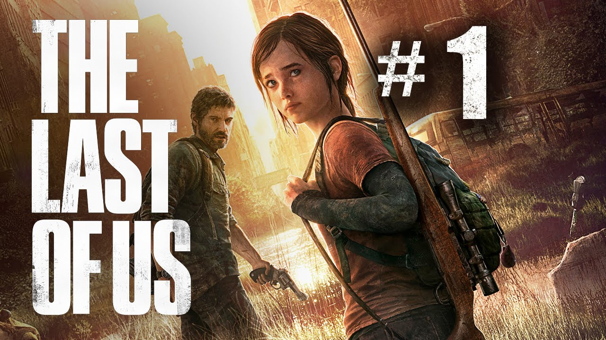
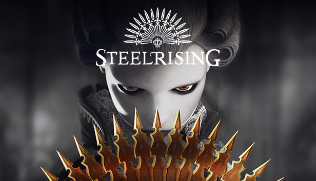
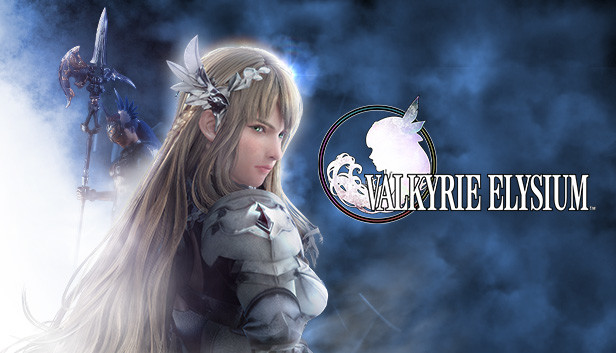

The Last of Us Part 1

Release & Platform
Datum: 2 september 2022
Platform: PS5
The Last of Us wordt mede door de uitmuntende storytelling en gameplay als een van de beste games
ooit
gemaakt gezien. In de remake belooft Naugthy Dog meer dan alleen een audiovisueel likje verf. Zo
maakt
de game
gebruik van de DualSence’s haptics, krijgt de AI een upgrade en zijn er meer dan 60
toegankelijkheidsopties. En
voor de sadomasochisten onder ons: er komt ook een permadeath-modus.
Steelrising

Release & Platform
Datum: 8 september 2022
Platform: pc, PS5, Xbox Series X/S
Steelrising is een Soulslike game die zich tijdens een alternatieve versie van de Franse Revolutie
afspeelt. In de action-RPG kruip je in de porseleinen huid van automaton Aegis en tuig je het
mechanische leger van
de despoot Lodewijk XVI af. Of de game zelf ook geschiedenis gaat schrijven, valt nog te bezien.
Splatoon 3

Release & Platform
Datum: 9 september 2022
Platform: Switch
Nintendo leverde met de vorige twee games duidelijk geen kliederwerk af, dus een derde Splatoon-deel
is
absoluut iets om naar uit te kijken. Naast de nodige nieuwe maps, wapens en muziek maakt ook
1v1-modus
Tableturf
Battle zijn entree en bevatten Splatfests nu drie teams. Genoeg redenen om wederom goed uit de verf
te
kunnen komen.
The Diofield Chronicle
Release & Platform
Datum: 22 september 2022
Platform: pc, PS4, PS5, Switch, Xbox One, Xbox Series X/S
Een nieuwe IP van Square Enix is altijd interessant om in de gaten te houden. The Diofield Chronicle
is
een strategy-RPG met realtime gevechten. Indien je nieuwsgierig bent maar je twijfelt of dit niet
iets
té
niche voor je is: er is voor elk platform een demo beschikbaar.
Valkyrie Elysium

Release & Platform
Datum: 29 september 2022
Platform: PS4, PS5
Square Enix heeft met nóg een game deze maand duidelijk niet stilgezeten. Elysium is een nieuw deel
in de
Valkyrie-serie, maar is dit keer niet door Tri-Ace maar door Soleil ontwikkeld. De game is nog
steeds
geïnspireerd door de Noordse mythologie, maar is in tegenstelling tot de eerdere delen meer een
action-RPG.
De pc-release volgt 11 november.